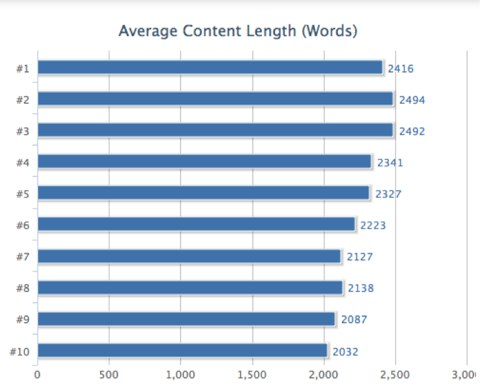

The Reason
Lifestyle blogs are considered a representation of an author's everyday life and interests. This means that by designing a lifestyle blog; you are not restricted by any one genre or topic to design around - it is open-ended.
This specific blog is considered a 'beauty and lifestyle' blog because I have access to a ton of beauty-related items to photograph (in the interest of using only original photography).
Inspiration & Design Goals
The goal for this website, was to create a site that utilized white space and a light color theme.
Inspiration for this website consisted of various other lifestyle blogs, light color palettes, and a blog I am currently designing for someone.
Statistics
Target Market: 21-35 year olds
The major blogging demographics consist 73% of 20-35 year olds, living in primarily the U.S. & UK, who most likely live in California or New York.
Word Count Goal: 2,000+ per article.
Based on a study by Neil Patel, high-content articles get better is preferred by Google, and you are more likely to be shown higher in search results.

https://sysomos.com/reports/blogger-demographics/
https://www.quicksprout.com/2012/12/20/the-science-behind-long-copy-how-more-content-increases-rankings-and-conversions/